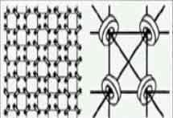

PERTEMUAN 1
PENGENALAN KOMPUTER
A. TUJUAN PEMBELAJARAN
Setelah mengikuti materi pada pertemuan ke-1 ini mahasiswa mampu menjelaskan jenis-jenis komputer yang digunakan sampai saat ini.
1. Defini Komputer
Komputer lebih dikenal oleh masyarakat sebagai alat teknologi atau elektronik yang dapat menginput data, memproses data, dan menghasilkan output berupa informasi. Kata komputer berasal dari bahasa Yunani yakni Computare artinya adalah menghitung. Dengan perkembangan teknologi yang semakin canggih, fungsi komputer dari tahun ke tahun selalu berkembang, tidak hanya sebagai alat untuk menghitung saja. Komputer sudah menjadi perlengkapan dan kebutuhan hidup karena kemajuan teknologi yang sangat pesat perkembangannya. Berikut pengertian komputer menurut para ahli:
a. Donald. H. Sanders
Komputer adalah suatu elektronik yang dapat dipergunakan untuk melakukan manipulasi data dengan cepat dan tepat, komputer dibuat agar secara otomatis dapat menerima dan menyimpan data yang di input, memprosesnya, dan kemudian menghasilkan output berdasarkan instruksi-instruksi yang telah disimpan dalam memori
b. Robert. H. Blissmer
Ia mengatakan bahwa komputer adalah alat elektronik yang bertugas untuk menerima masukan (input), lalu masukan tersebut diproses dengan instruksi yang sudah diberikan, kemudian komputer dapat menyimpan perintah-perintah dan menghasilkan output dalam bentuk informasi.
c. Gordon. B. Davis
Ia mengartikan bahwa komputer adalah sebuah tips khusus untuk alat menghitung yang memiliki sifat yang sesuai
Dari beberapa pakar yang mengartikan komputer, maka dapat disimpulkan bahwa komputer merupakan suatu alat elektronik yang dapat mengolah suatu data dengan cara di input, proses dan menghasilkan output berupa informasi yang disesuaikan dengan apa yang telah di input dan dapat di simpan dalam memori. Secara umum pada dasarnya komputer memiliki ciri-ciri sebagai berikut:
a. Komputer yaitu kumpulan dari beberapa alat elektronik yang digabungkan.
b. Komputer dapat menginput, lalu memproses inputan, dan menyimpan data.
c. Komputer dapat menghasilkan informasi sesuai permintaan dari user.
Tiga hal utama di dalam sebuah komputer, yakni :
a. Alat Masukan (Input Device) seperti Keyboard, Mouse, dll
b. Alat Pemroses Data (Processor)
c. Alat Keluaran (Output Device) seperti printer, speaker, dan monitor.
2. Generasi Komputer dari Tahun ke Tahun
Pada setiap perkembangan komputer, dapat dilihat dari bentuk, kegunaan, tampilan dan prosedur-prosedur yang dapat dilakukan. Jika pada komputer generasi pertama menjadi penemuan awal dari sebuah tabung yang hampa udara sebagai alat penguat jaringan atau sinyal, lalu pada generasi berikutnya mulai ditemukannya suatu transistor yang dapat digunakan sebagai alat menstabilkan tegangan listrik, kemudia pada komputer generasi ke-tiga mulai dikembangkannya teknologi IC Chip yang berevolusi sebagai Microprocessor yang masih digunakan hingga saat ini.
a. Generasi Pertama Komputer yaitu pada tahun (1941 - 1952)
Pada awal masa dimana komputer ditemukan, tujuan utama dari komputer adalah untuk membantu proses perhitungan, kemudian komputer mulai dengan program dan diterapkan pada beberapa tujuan, salah satunya untuk perhitungan matematis untuk tujuan perang. Terjadi persaingan antar negara yang terlibat dalam Perang Dunia 2 dimasa awal generasi komputer pertama. Tabung hampa udara yang ditemukan memiliki fungsi untuk penguat sinyal, dimana ini adalah komponen khas dari komputer generasi pertama. Dimana komponen atau bahan bakunya terbuat dari kaca, sehingga tabung hampa udara ini memiliki kelemahan, diantaranya mudah menyalurkan panas dan mudah pecah. Panas yang dihasilkanpun harus dinetralisir agar tetap terjaga tingkat suhu yang dihasilkan.

Pada tahun 1946 ditambahkan komponen-komponen dan akhirnya komputer yang ada berukuran besar, memiliki berat yang luar biasa dan pastinya memiliki harga yang mahal. Komputer tersebut adalah ENIAC yang di dalamnya memiliki 18.800 tabung hampa udara dan memiliki bobot 30 ton. Karena memiliki ukuran yang sangat besar dan sangat berat sampai-sampai komputer ini memiliki ruangan kelas tersendiri.
Generasi komputer pertama berdasarkan informasi yang diperolah memiliki ciri-ciri, sebegai berikut:
1) Instruksi yang ditulis ditujukan khusus untuk mengerjakan suatu tugas atau fungsi yang spesifik saja.
2) Bentuk komputer generasi pertama sangatlah besar dan memerlukan ruangan yang sangat luas karena menggunakan vacuum tube (tube vakum) dan magnet bentuk silinder (silinder magnetic).
3) Proses komputasi masih sangat rendah dan boros listrik.
4) Pada generasi komputer pertama ini hanya beberapa orang yang dapat mengoperasikannya, dikarenakan kode mesin yang rumit.
5) Belum adanya bahasa pemrograman dan sistem operasi.
b. Generasi Kedua Komputer yaitu pada tahun (1952-1956-1958)
Pada komputer generasi kedua, bentuk dari komputer sudah memiliki bentuk agak lebih kecil dibandingkan dengan komputer generasi pertama. Ciri khas komputer generasi kedua adalah ditemukannya Transistor (transfer resistor). Transistor memiliki tiga lapis bahan baku yang terdiri dari basic, collector dan emmiter. Hal yang membuat komputer generasi kedua ini menarik adalah sudah digunakannya bahasa pemrograman yaitu COBOL (Common Business Oriented Language) dan FORTRAN (Formula Translator).
c. Generasi Ketiga Komputer yaitu pada tahun (1958 – 1970)
Pada komputer generasi ketiga ini, secuil silicium adalah salah satu penemuan pada masa ini yang memiliki bentuk ukuran hanya beberapa milimeter, yang lebih dikenal sebagai IC-Chip (Integrated Circuit). IC-Chip mulai digunakan dari komputer di generasi ketiga. IC di dalam sejarah komputer memiliki peranan sangat besar. Cincin magnetic yang memagnetisasi secara berlawanan atau satu arah, dengan men-sinyalkan kondisi sebagai "ON" atau "OFF" lalu diimplementasikan menjadi konsep 0 dan 1 bilangan biner Setiap memori memiliki 924 cincin magnetic yang pada setiap bitnya terdapat jutaan bit informasi yang berada pada satu chip tunggal yang ukuran sangat kecil. Contohnya seperti IBM S-360 pada komputer pertama yang mempergunakan IC dan pada tahun 1964 dipublikasikan seperti pada gambar berikut :
d. Generasi Keempat Komputer yaitu pada tahun (1970 – 1980)
Yang menjadi ciri khas pada generasi keempat adalah Microprocessor dimana terdapat pemadatan ribuan IC pada sebuah Chip. Pada generasi ini harga yang ditawarkan semakin murah dikarenakan ukuran yang akan semakin mengecil dan memiliki kemampuan yang semakin meningkat. Microprocessor adalah awal mulanya kelahiran komputer personal. Intel Corp pada tahun 1971, dengan Microprocessor pertamanya serie 4004. Apple I Komputer yang dikembangkan oleh Steve Wozniak dan Steve Jobs merupakan contoh dari komputer generasi keempat yang memasukan sebuah microprocessor ke dalam circuit board komputer. Kemudian muncul TRS Model 80 dengan jenis processor Motorola 68000 dan Zilog Z-80 yang menggunakan 64Kb RAM standard. Pada generasi ini komputer mulai mudah digunakan, antara lain dengan adanya tampilan GUI (Graphic User Interface), pemakaian mouse, dan lain-lain.
e. Generasi Kelima-Sekarang (1980 – saat ini)
Munculnya generasi kelima yaitu dengan datangannya: LSI (Large Scale Integration) dimana ini dilakukan dengan cara pemadatan ribuan Microprocessor yang dimasukan pada sebuah Microprocesor. Munculnya generasi kelima yaitu dengan datangannya: LSI (Large Scale Integration) dimana ini dilakukan dengan cara pemadatan ribuan Microprocessor yang dimasukan pada sebuah Microprocesor Munculnya generasi kelima yaitu dengan datangannya: LSI (Large Scale Integration) dimana ini dilakukan dengan cara pemadatan ribuan Microprocessor yang dimasukan pada sebuah Microprocesor.

f. Generasi Keenam Komputer (Masa Depan)
Perkembangan komputer pada era generasi ini disebut sebagai komputer masa depan. Para penggiat teknologi atau para peneliti banyak memiliki ide hingga memiliki impian-impian begitu pula dengan para pengguna yang ingin melihat atau membuat komputer lebih canggih untuk masa depan guna dapat membantu manusia dalam mengerjakan aktifitas serta kegiatan sehari-hari. Contohnya seperti penggunaan robot yang dapat berperan serta dalam kegiatan manusia
Hal yang didukung oleh komputer masa depan adalah komputer dengan kemampuan untuk yang dapat meminimalisir proses menggunakan baris program atau dikenal dengan programless.
3. Penggolongan Komputer
Komputer dapat digolongkan berdasarkan:
a. Processor
Jenis komputer berdasarkan prosesornya digolongkan menjadi tiga, yaitu Mainframe, Minicomputer dan Personal Computer (PC). sementara Personal Computer (PC) terus-menerus berkembang dengan pesatnya. (Rosdiana, 2016).
1) Mainframe
Mainframe merupakan komputer yang memiliki prosesor dengan kemampuan yang sangat besar, dikarenakan komputer jenis ini ditunjukan untuk banyak pemakai. Komputer mainframe memiliki CPU disatu mesin, memiliki perangkat penyimpanan,
komunikasi disatu mesin tersendiri yang dihubungkan dengan banyak terminal yang terdiri dari monitor dan keyboard saja.
2) Minicomputer
Minicomputer merupakan sisi mini dari komputer mainframe. Jika pada mainframe dapat memiliki terminal yang jumlahnya ribuan maka mini hanya dapat sampai puluhan atau ratusan.
3) Personal Computer (PC)
Personal Computer (PC) merupakan komputer diperuntukan hanya satu pemakai dengan satu pemakai program aplikasi. Perangkatnya yang simpel dan dapat diringkas ke dalam satu mesin saja. Komputer ini mempunyai keyboard, monitor, dan
CPU.
b. Jenis Komputer Berdasarkan Bentuk dan Ukuran Fisik
Komputer tak hanya dapat digolongkan dari kemampuannya saja tapi juga dari bentuk dan ukuran, berikut jenis komputer berdasarkan bentuk dan ukurannya:
1) Tower
Dikarenakan ukuran yang relatif besar biasanya jenis ini menaruhnya disamping ataupun dibawah meja. Jenis komputer ini menyediakan banyak ruang di dalamnya dan menyediakan banyaknya expansion slot (tempat memasang card tambahan),
sehingga dapat menambahkan berbagai perangkat atau accessories pendukung lainnya.
 2) Desktop
2) Desktop
Desktop yaitu komputer yang sedikit lebih kecil ukurannya dari Tower, pada jenis komputer ini tentunya banyak digunakan karena harganya relatif lebih terjangkau jika dibandingkan dengan bentuk dan ukuran yang lain. Komputer pada
masa ini yang banyak kita temui dan kita gunakan adalah jenis desktop.
3) Portable
Komputer jenis Portable memiliki ukuran lebih kecil dari jenis komputer desktop, hal ini bisa terjadi dikarenakan adanya bagian yang dirangkai menjadi satu kotak saja, sehingga lebih mudah untuk dibawa.
 4) Notebook
4) Notebook
Komputer jenis ini besarnya hanya seukuran buku saja. Ukuran komputer Notebook hanya sebesar kertas kuarto, yaitu 8½ x 11 inch, tebalnya berkisar 1 inch sampai 1½ inch dan memiliki berat antara 4 kg sampai 6 kg.
5) Subnotebook
Jenis komputer ini memiliki ukuran yang lebih kecil jika dibandingkan dengan komputer Notebook dikarenakan adanya komponen pada perangkat yang tidak dipasang, contohnya seperti Diskdrive.
6) Palmtop
Palmtop atau disebut juga komputer dalam genggaman, hal ini karena ukuran komputer tersebut yang sangat kecil. Komputer ini sering disebut juga dengan handheld komputer.
c. Komputer Berdasarkan Jenis Data yang Diolah
Komputer berdasarkan dari jenis data yang diolah dibedakan menjadi 3 bagian yaitu:
1) Komputer Analog
Data kualitatif biasanya diolah menggunakan komputer jenis ini, dimana komputer dapat bekerja secara berkelanjutan dan paralel, dan tidak perlu adanya bahasa perantara. Contoh pada komputer jenis ini digunakan di rumah sakit untuk
pengukur suhu, voltase pada listrik, kecepatan suara dan lainnya.
 2) Komputer Digital
2) Komputer Digital
Data kuantitatif biasanya diolah menggunakan jenis komputer ini, contohnya seperti angka, huruf, kombinasi angka dan huruf, karakterkarakter khusus dan tentunya membutuhkan bahasa perantara. Contohnya komputer PC, dan
lain-lain.
3) Komputer Hybrid
Komputer jenis ini adalah gabungan dari komputer analog dengan komputer digital. Di dalam aplikasi yang khusus dibutuhan suatu komputer yang mampu menyelesaikan permasalah lebih cepat dari komputer analog dan lebih tepat dari
komputer digital. Contohnya Facsimile.
d. Komputer Berdasarkan Penggunaannya
Jenis komputer berdasarkan penggunaanya adalah sebagai berikut:
1) General Purpose Computer
Masalah.bisnis serta.masalah lainnya cocok akan mudah dipecahkan dengan menggunakan komputer jenis ini. Selain itu, untuk.komputer pribadi.sangat bagus.menggunakan jenis general purpose computer.
2) Special.Purpose.Computer
Masalah yang dipecahkan oleh komputer ini biasanya adalah masalah yang memiliki spesifik khusus. Tidak semua masalah bisa dipecahkan. Suatu program untuk proses tertentu dimasukkan ke dalam komputer.